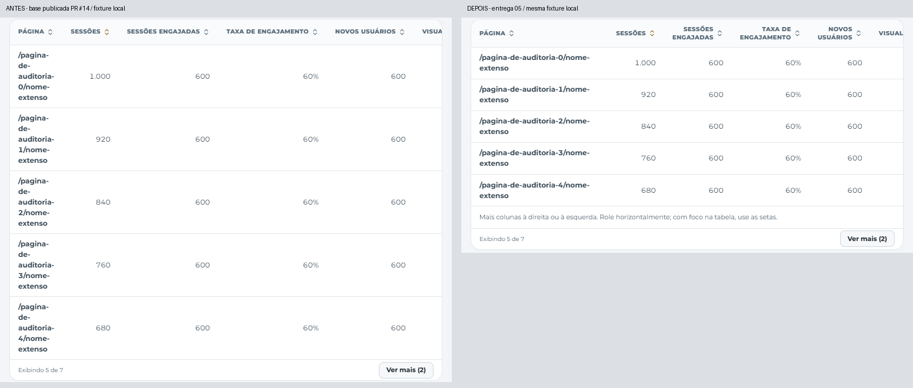
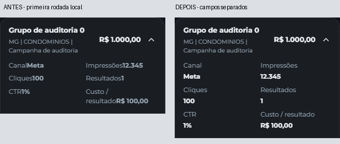

Evidências locais com dados controlados. Os nomes, números e colunas são preservados. A continuação horizontal é interna à tabela; a página mantém sua largura.
O primeiro par compara a base publicada do PR #14 com esta entrega. O par móvel compara a primeira rodada local com a separação dos campos. Clique nas imagens para abrir os recortes em tamanho original. Nenhuma imagem representa uma sessão autenticada de produção.


Detalhamento móvel claro · Site completo em tablet escuro · Composição de impressão · Relatório · Testes